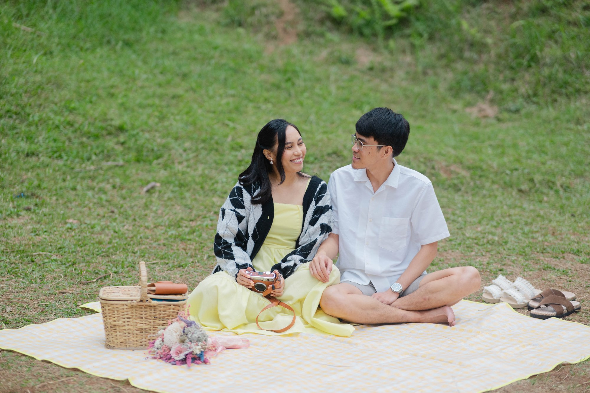

Noong nag Dubai ako for better career opportunities pero in the end, umuwi din ako ng Pilipinas for her.
I can't specify the exact moment, but I realized this would last when I saw how he made an effort to get close to my loved ones, and when he chose to join me in SFC.

Kapag naiinis siya, at iniinis ko pa lalo haha
His random singing anytime and anywhere. Though it annoys me too most of the time kasi napakaingay nya. HAHA

Nung pag uwi ko galing Dubai walang wala ako, and every time ihahatid ko siya sa apartment, pag sumasakay kami ng jeep, lagi ko siyang tinatanong kung may barya ba siya, ang hindi niya alam, kahit papel na pera wala rin ako.
One time nung nanliligaw pa lang siya, may pinabaon siyang food treats with notes in Bicol words. Pero super lalim... Ginoogle translate nya pala hahahaha

Super family-oriented to the point na pati mga friends niya ay tinitreat niya as family.
His patieeeence. As in. And him being uneffortlessly funny.

Our 1st anniversary, sa apartment lang nila. Nagluto ako ng favorite namin na Spam rice and carbonara, tapos nag exchange kami ng gifts and letters. 😊
Attending our first Liveloud concert together. Hindi pa siya SFC that time, so I really appreciated him joining kahit wala pa siyang idea sa mangyayari.

Anong kakainin?
Anong papanuorin? Haha

Building something that's ours — our first home na may high-ceiling living room and a small garden outside na pagtatambayan namin, our first car, our first little Yana and Polo.
Sharing everything with him — especially being spoiled by his cooking every dayyy. And syempre travelling together, na kami lang. HAHA